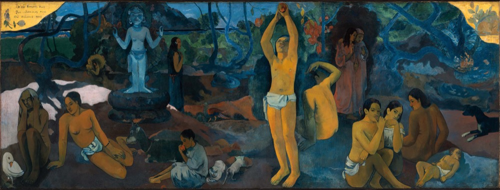

單元一
生命的學問導論
從時代的叩問，走向人生三問與五大核心素養
孫效智 | 臺大生命教育研發育成中心 第十期師資培育學分班 | 台北班 Day 1
暖身：先聊聊你的這三學期
正式開始之前，先回想一下——
- 這三個學期，你修了哪些課？
- 到目前為止，你對「生命教育」有怎樣的認識？
- 生命教育的五大核心素養，你能說出是哪五個嗎？
先不急著找標準答案——把心裡浮現的，和身邊的夥伴聊幾分鐘。
生命教育總整課程
Life Education Capstone Course
五個拼塊，等著被拼湊成完整的拼圖
三個學期下來，各位已經修過許多與生命教育相關的課程。
但這些課，和「五大核心素養」究竟是什麼關係？這五個素養，我們真的認識了嗎？
這門總整課程要做的，是把每一個核心素養都打磨成一塊扎扎實實的拼塊，再把它們拼成一幅完整的生命教育拼圖。
今天的三個關鍵任務
觸動重新被點亮
被生命最根本、最重要的課題重新點燃——喚醒的不只是「我為何而活」，而是想再一次走進整個生命的學問。
攤碎片誠實面對「接不起來」
攤開三學期的收穫，卻發現每一塊都學過、卻拼不起來——讓這份「接不起來」，化為想把它整合起來的渴望。
收網拼成完整的拼圖
最後，把這些打磨好的拼塊，用你們自己提出的問題與困惑接起來——拼成一幅完整的生命教育拼圖。
這幅拼圖，會在最後一刻才完整——而且，是你們自己，一塊一塊親手拼起來的。
六堂課的地圖
- 第一堂 從時代挑戰看人生的重大課題（09:10–10:00）
- 第二堂 三學期，我學到了什麼？（10:10–11:00）
- 第三堂 我的人生 X 問（11:10–12:00）
- 第四堂 古今中外的人生 X 問（13:00–13:50）
- 第五堂 生命教育的人生三問（14:00–14:50）
- 第六堂 從人生三問到五大核心素養（15:00–15:50）
壹
從時代挑戰看人生的重大課題
在這個容易把人活成工具的時代，重新問自己：人，究竟為何而活？
換一個尺度：宇宙中的小藍點
把鏡頭拉到 60 億公里外回望地球——我們所爭奪的一切，只發生在一粒懸浮於陽光中的塵埃上。
Carl Sagan〈小藍點 Pale Blue Dot〉——把「為何而活、彼此珍惜」，拉回生命本身。
「人，不見了」
早在 1970 年代，UNESCO《學習生存》(Learning to Be) 即指出現代教育的「去人化」；學者林治平也沉痛呼籲「人不見了」。
我們每天教學生「怎麼變得有用」，卻很少停下來問生命中最根本、最重要的問題。
這一週，我想邀請你重新被這些問題點燃。
此刻，你最想重新探問的一個問題，是什麼？
人不見了，各種問題當然浮現
人才的厚度與溫度的缺乏
當教育過度傾斜於學科競爭與人才培育，培養出來的人即使在專業上是頂尖人才，卻往往缺乏人的厚度與溫度，也沒有宏大的理想與終極關懷。他們所在乎的可能只是自身短暫的利益，為了利益甚至可以漠視他人的存在。
社會付出的代價
這些社會現象表面上各自獨立，但追根究底，都與教育在「人的培育」上的缺失息息相關。
誰敢當下一個尹衍樑的老師？
兩則新聞，相隔六十年——師生關係的兩個極端，照出我們失落了什麼。
1966
王金平 × 尹衍樑
感化院少年帶著刀傷走進老師宿舍。26 歲的王金平沒有通報、沒有切割，他拿出醫藥箱，包紮、清傷、然後說：
「數學不會的，晚飯後來找我，我教你。
英文一天背三個單字，很快就補齊了。」
那個少年後來成為擁有近 600 項國際專利的千億總裁尹衍樑。事業有成後，向當年的王金平老師三鞠躬。
VS
2026
高雄某資深自然科老師
教學認真、深受學生喜愛、長期指導科展，卻長期遭受極度不服管教學生言語霸凌、提告、家長申訴。
請了身心調適假回到學校後——從校舍高處墜落，送醫不治。
臺北市 2024 學年度校事會議案件，八成最後未成案——但老師在等待結果的那段時間，已被貼上「問題老師」標籤。
教育最珍貴的地方，從來不是把乖孩子教得更乖；而是有人願意在一個孩子還不可愛、一身麻煩時，仍然相信他有可能變好。
失序的校園，與一齣爆紅的韓劇
⚠ 學生間流傳的「教戰守則」
想趕走男老師 → 走「性別平等」／想趕走女老師 → 走「校事會議」
全國教師會理事李雅文受訪指出：有人在網路社群討論「如何用性平案陷害老師」；Threads 上一名國中生公開詢問如何把班導「弄走」，竟有人留言建議誣告。（聯合新聞網 2025）
當「整老師」變成可以彼此傳授的攻略，受傷的不只是老師，而是整個教育體系的崩解。
韓劇《鐵拳教育》（참교육）
Netflix · 2026
校園失序、教師求助無門，劇中政府設「教權保護局」以非常手段整頓——爆紅之餘，照見的是真實的教師困境。
三個數字，三記警鐘
三組數字，讓我們看見當下青年世代正在面對的處境。
274人
2024 年 15–24 歲青少年自殺身亡
創近年新高，是該年齡層第 2 大死因。
衛福部「2024 年國人死因統計」
1／5
青少年曾有自殺意念
青少女中度以上達 23.4%；男生為 7.5%。
兒福聯盟「2025 青少年心理健康調查」；n＝7,007
46.5％
遇心理困擾時，優先向 AI 求助
而非老師、家長或專業人員。
兒福聯盟「2025 青少年心理健康調查」
這些數字不是抽象統計，而是一群正在尋找理解、陪伴與生命方向的年輕人。
時代脈動：黃仁勳——AI 重新定義「能力」
當執行成本趨近於零，定義問題、做出判斷、培養品味，成為人最後的競爭力。
黃仁勳於卡內基美隆大學畢業演說（全球大視野）。
AI 時代的生命教育 · Andrej Karpathy
可以外包思考，但不能外包「理解」
侯智薰／《商業周刊》（2026.05.26）轉引 OpenAI 共同創辦人 Andrej Karpathy。對生命教育的啟發——
「你可以外包你的思考，但你不能外包你的理解。」—— ANDREJ KARPATHY
AI 時代的根本轉變：思考變成廉價商品（AI 執行更佳），但理解力的價值反而提升——因為人需要指揮更強大的工具。
「程式設計師不會被 AI 取代，但『只會寫程式』的人會。」
The only problem to solve is what is the problem to solve.
 照片：Sk aman khan／Wikimedia Commons（CC0）
照片：Sk aman khan／Wikimedia Commons（CC0）
AI 時代真正稀缺的三項資產
理解力把握本質：「為什麼這樣做？」
品味判斷好壞：「哪一個版本更好？」
好奇心持續探問：「還有別的可能嗎？」
寫日記、深度閱讀、跨界交流——這些看似低效率的活動，恰是 AI 時代真正的複利。這正是生命教育所關注的：「人之所以為人」的厚度。
貳
三學期，我學到什麼？
三學期的收穫，每一塊都在——只是它們，還沒拼成一張完整的圖。
分組任務：盤點你負責的核心素養
五組各認領一個核心素養，就四個面向討論，再上台報告。
第1組 · 終極關懷
第2組 · 價值思辨
第3組 · 靈性修養
第4組 · 人學探索
第5組 · 哲學思考
流程
① 分組討論 30 分（四面向見下頁） → ② 各組報告 2–3 分
五塊拼塊，先散落桌上
四個討論面向
① 學了什麼
這三學期，圍繞這個素養，你們修過哪些課、學到了哪些內容？
② 理解了什麼意涵
這些所學，如何幫助你們把握所負責的這個核心素養真正的意涵？收斂成一段你們對它的「理解」。
③ 哪裡還不懂
關於這個素養，你們覺得自己哪些地方還理解得不夠？
④ 和誰接不起來
它和其他四個素養是什麼關係？哪一條連結你們接不太起來？
⏱ 討論 30 分鐘分工討論四面向，推一位代表準備上台。重點放在：② 對所負責核心素養的理解、③ 還有哪些地方不太懂、④ 能否掌握「所負責的核心素養與其他核心素養之間的關係」。
掃你那一組的 QR，把討論打在手機上
請各小組派一位同學，掃描小組該討論的核心素養那個碼，
在手機上充分寫下「理解」與「還不懂／接不起來」，投影幕即時更新。
空白地圖：五塊拼塊都在，只是還沒有完全拼起來
今天下午第五、六堂，我們一起一格一格把這張圖補起來。
下一段：我的人生 X 問——先讓你們自己的提問浮現，再回頭接這張地圖。
參
我的人生 X 問
在聽見別人的答案以前，先聽見自己心裡，那個一直沒說出口的問題。
小組分享：人生最重要的 15 件事
課前你已寫下人生最重要的 15 件事，並與 AI 對話產生新版。
- 4–5 人一組，分享各自的 15 件事與怎麼分類
- 組員互相追問：「為什麼這對你重要？」
- 試著把它們收斂成人生 X 問
從 15 件事，提煉出你的人生 X 問
課前寫的 15 件事在小組裡分享、互相追問；接下來上傳到全班文字雲的，是各自提煉出的「人生 X 問」。
全班的提問，匯成一片問題雲
把你提煉出的人生 X 問打上來，即時匯成全班的問題雲。
手機開 …/ask.html · 已收集 0 則
肆
古今中外的人生 X 問
你心裡的那個提問，千百年來，許多偉大的心靈也曾日夜追問。
卡繆的「人生一問」
真正嚴肅的哲學問題只有一個：那就是自殺。
卡繆問：若人生本身是荒謬、沒有意義的，人為什麼還要繼續活下去、而不自殺？這一問相當尖銳。
但這個問題其實預設了「人生荒謬」的立場——這個預設站不站得住，本身就值得追問。在他的「人生一問」背後，其實還有更根本的問題待解。
卡繆的回應
不選擇自殺，也不選擇逃避荒謬的宗教——即使荒謬，也要勇敢地活下去。沙特稱他為「頑固的人本主義者」（stubborn humanist）。
卡繆《薛西弗斯的神話》。
《遺願清單》的「人生二問」
電影《遺願清單》中，Carter 對 Edward 提出兩個進天堂的條件。

《一路玩到掛 The Bucket List》（2007）
一生是否都過得快樂？
- 快樂有表面、感官、短暫的
- 也有深層、精神、長期的
- 快樂真的那麼重要嗎？
- 若過得快樂卻沒有意義呢？
一生是否都帶給旁邊的人快樂？
- 要如何帶給別人快樂？
- 若不講究方法，會不會弄巧成拙？
- 反而帶給自己與他人痛苦？
由此可見，「人生二問」似乎仍不能涵蓋人生所有最重要的課題。
康德的「人生三問」
Immanuel Kant · 1724–1804
康德在《純粹理性批判》、《實踐理性批判》、《判斷力批判》三大批判的深奧論述背後，核心問題可歸結為三：
我能知道什麼？
What can I know?
探討人類認識能力的界限與可能性——哪些知識客觀真實，哪些只是主觀認知的產物。知識論的範疇。
我應該做什麼？
What ought I to do?
探討人類行為的道德準則——康德強調「無上命令」，道德行為應出於對道德法則的純粹敬重。倫理學的核心課題。
我可以期待什麼？
What may I hope?
觸及宗教與信仰的層面——盡了道德義務後，可否期待超越現世的回報？為道德實踐的圓滿，必須「預設」上帝與靈魂不朽。
三問最終都歸結到一個更根本的提問——「人是什麼？」（What is man?） 這顯示了「人學探索」在人生根本課題中的核心地位。
托爾斯泰的「人生三問」
托爾斯泰晚年經歷深刻的精神危機。在短篇小說《三個問題》中，他透過一位國王尋找人生答案的故事，提出三個關乎實踐智慧的提問：
最重要的時間？
答案：「現在」。只有在現在，我們才對自己擁有掌控權。
最重要的人？
答案：「現在與你在一起的人」。誰是你最需要關注的對象？
最重要的事？
答案：「為現在與你在一起的人做好事」。因為這正是人來到世界上的唯一目的。
托爾斯泰側重日常生活中的實踐與抉擇——把握當下、珍惜身邊的人；但忽略了康德的第二問（如何判斷善惡）與第三問（行善後可有的盼望）。
高更的「人生三問」
高更於 1897 年在大溪地完成近四公尺巨幅油畫——《我們從何處來？我們是誰？我們向何處去？》（D'où venons-nous? Que sommes-nous? Où allons-nous?）

我們從何處來？
D'où venons-nous?
畫作右側：沉睡的嬰兒與年輕女性，象徵生命的誕生與純真，引導思考生命的起源。
我們是誰？
Que sommes-nous?
畫作中央：採摘果實的成年男子，象徵壯年的勞動、慾望與追求，促使我們反思自我。
我們向何處去？
Où allons-nous?
畫作左側：形容枯槁的老婦人，象徵衰老與死亡的臨近，逼迫我們直面死亡。
高更從神學人學追問存在的起源、本質與歸宿，但缺乏實踐關懷，更多反映個人的絕望與困惑。
各版本有優點，亦有限制
卡繆 · 一問
為何不結束？——逼出「活著的理由」，但缺終極意義的討論。
遺願清單 · 二問
快樂與利他——溫暖，但停在感受，缺意義的縱深。
康德／托爾斯泰／高更
指向「人是什麼」「此刻利他」「從何處來往何處去」——深刻，但都缺乏知行合一的探究。
各組一句點評：哪個最打動你？最不足？——你們收斂的大問題，比較像哪一位？
伍
生命教育的人生三問
為何而活、如何生活、如何活出——三個問題，撐起完整的人生。
以終為始：先確立終極目標
大學之道，在明明德，在親民，在止於至善。知止而後有定，定而後能靜，靜而後能安，安而後能慮，慮而後能得。物有本末，事有終始，知所先後，則近道矣。
以「止於至善」為終極目標——知道要止於何處（終極關懷），心才能定、靜、安、慮、得。
Stephen Covey · 1932–2012
「以終為始」（Begin with the End in Mind）——做任何事，先在心中清楚描繪最終的目標與藍圖，再據以規劃與行動。
出自《與成功有約》第二個習慣。人生亦然：先確立「為何而活」，才能據以選擇「如何生活」與「如何活出」。
開車先輸入目的地，導航才算得出路線——我們有沒有為人生，輸入過一個目的地？
兩支短片：方向，比速度更重要
〈方向比速度重要〉——跑錯方向，再快也到不了（22 秒短片）。
〈聚焦目標就是武器〉——巴菲特只聚焦最重要的前 5 個目標（好葉動畫，4:40）。
生命教育的人生三問：以工作專案類比
任何專案都要回答三個問題——目標、方法、資源與執行力。人生亦然。
目標是什麼人應為何而活？
→ 終極關懷（ultimate concern）
要去哪裡
方法策略人應如何生活？
→ 價值思辨（value deliberation）
走哪條路
資源執行力如何活出該活的生命？
→ 靈性修養（spiritual cultivation）
車有沒有油、你會不會開
還記得稍早貼上的那些困惑嗎？此刻把它們一條一條接回這三個問題——你會發現，它們本來就彼此相連。
第一問：終極關懷
「人應為何而活？」——關乎生命終極意義的提問
當我們不斷追問「然後呢？」時，最終會觸及那個最核心的問題：這一切的努力，最終是為了什麼？如果生命最終都將走向死亡，那麼活著的意義究竟何在？
Meaning in life
在人生中所能經驗或開創的意義——涉及終極理想的探問。
希臘 eudaimonia ／士林哲學 bonum summum ／《大學》「至善」——人生所能達到的最圓滿幸福。
Meaning of life
人的存在本身是否具有超越虛無的意義——涉及終極信念的確立。
在虛無主義與宗教信仰之間，人究竟如何立足？
終極信念：生死關懷與宗教探索
Martin Heidegger · 1889–1976
海德格：「人是向死存有」（being-towards-death），注定走向死亡。問題是——死亡是一堵牆，還是一扇門？
死亡是一堵牆？
純粹唯物論——死後是虛無與斷滅。物理主義者 Owen Flanagan 坦承：「在沒有死後存在的世界中，意義問題非常棘手。」卡繆的存在虛無主義即如此：人生荒謬，卻仍勇敢挺立反抗。
死亡是一扇門？
齊克果選擇信仰的跳躍——死後另有世界，人生能超越虛無、延伸至永恆。佛教「涅槃」、基督宗教「天國」、儒家「天人合一」皆指引人超越有限、追求永恆。
生命教育並不預設特定終極信念或宗教立場，但鼓勵學生保持開放的心胸，去認識不同立場各代表怎樣的人生觀。
第二問：價值思辨
「人應如何生活？」——以終極理想為形上基礎的價值判斷
價值思辨並非一套僵化的道德教條，而是一種以特定終極信念與理想為框架的獨立思考與理性判斷能力。
價值思辨的三個層次
- 道德哲學的省思——認識不同倫理學派別（效益主義、義務論、德行論等），理解其優缺點，並學會以之分析具體的道德議題。
- 各領域的價值判斷——將價值思辨應用於生命倫理（安樂死、墮胎、基因科技）、環境倫理、科技倫理、專業倫理。
- 美感與健康素養的培育——價值思辨不僅局限於道德領域，也包含對美的欣賞與對健康的重視。
第三問：靈性修養
「如何才能活出該活出的生命？」——知行合一的問題
即使知道了「為何而活」與「如何生活」，在現實中人仍常面臨「知易行難」的困境——僅有理性認知與價值思辨是不夠的，人還需要一種內在的力量。
以「知行合一」為目標的靈性修養歷程
- 靈性自覺與發展——每個人都擁有能思能覺的「我」。佛教稱這種覺察能力為「覺性」，成佛即成為「覺者」：包含自覺，也包含對他人痛苦的同理與慈悲（覺他）。
- 價值內化與修練——將思辨確立的價值觀，透過反覆實踐烙印在性格中。「操則存，捨則亡」，需要持續不斷的努力。
- 人格的統整與昇華——最高理想是孔子「從心所欲不逾矩」，或王陽明「與天地萬物為一體」的大人境界。
人生三問的邏輯體系
三個問題環環相扣，缺一不可，共同引領人們踏上探索生命、實踐生命、圓滿生命的旅程。
第一問 終極關懷
確立人生的方向與目標
提供價值思辨的準則與框架
第二問 價值思辨
確立人生應行的道路
建構實踐的價值信念體系
第三問 靈性修養
賦予實踐的內在動力
達到知行合一以圓滿終極理想
人格愈統整、靈性愈清明 → 對生命實相愈能究竟了悟 → 強化價值思辨與知行合一 → 復又增進人格統整……
週而復始、綿綿不已，引領人生向上超升，進入止於至善的正向循環。
陸
從人生三問到五大核心素養
三個問題，慢慢長成五個面向——一張屬於你的生命地圖。
為什麼，要擴成五個？
基礎人學探索
要回答三問，得先回答「人是什麼」——這是一切的基礎。
方法哲學思考
用什麼方法想這些問題？批判、論證、後設思考。
三問（終極關懷·價值思辨·靈性修養）＋ 基礎（人學探索）＋ 方法（哲學思考）＝ 五大核心素養
五大核心素養關係圖
人學探索＝基礎；哲學思考＝方法；靈性修養＝樞紐，滲透並支撐其他四個核心素養。現在回頭看——接得起來了嗎？
小組討論：把今天上午的收穫，接成一張網
今天上午，我們一一認識了五大核心素養，也在關係圖上看見它們彼此相連。現在回到小組，把所學整理清楚。
兩個討論重點
- ① 個別理解：逐一說說每個核心素養到底在問什麼、核心是什麼——終極關懷、價值思辨、靈性修養、人學探索、哲學思考。
- ② 彼此關係：它們之間如何環環相扣？哪個是源頭、哪個是方法、哪個是樞紐？（也把早上「接不起來」的地方，試著接上。）
⏱ 小組討論 10 分鐘
① 一人一素養：每人挑一個，用一句話講它的核心。
② 連連看：在白紙上把五個素養排出關係（誰連誰、為什麼）。
③ 一句總結：你們這組覺得，五大素養合起來，是在回答什麼？
這既是今天上午的收束，也是檢核——明天起，我們會一一深入這些問題。
單元二 終極關懷課前作業
於單元二上課前繳交
- 電影欣賞《一路玩到掛》觀後心得：逐點列出並說明這部電影對你最具啟發性的地方。
今天，我們打開了
一張生命的地圖
這一週，不是讓你又學會什麼，
而是讓你重新有了探索生命的熱情，
並看見：你一直在問的問題，其實彼此相連。
——生命的學問，從這裡開始
人生第一問人應為何而活？
人生第二問該怎樣活著？
人生第三問如何能活出？
生命的學問三問 × 五大素養
基礎人學探索
方法哲學思考
彩蛋·主題曲〈三問〉
〔主歌〕
天還沒亮 我就開始往前走
從沒問過 這條路通向哪個盡頭
有人問我 你要去哪裡
我才驚覺 我從沒問過 為什麼
〔導歌〕
高更在畫布角落 顫抖地寫下
我們從何處來 我們是誰 又將往哪裡去
有人說 以終為始——先看見遠方那盞燈
於是我學著 把終點 放進每一個起點
〔副歌〕
為何而活 為何而活
在每個天微亮的清晨 輕輕問自己
該怎麼活 該怎麼活
在每個十字路口 誠實地選一條路
如何活出 如何活出
讓我說過的話 和我走過的路 慢慢合而為一
〔尾聲｜漸弱〕
為何活……該怎麼活……如何活出……
這，就是我的人生三問
〈三問〉——《生命的學問》概念專輯的開場曲；整週的最後一節，它會再次響起。